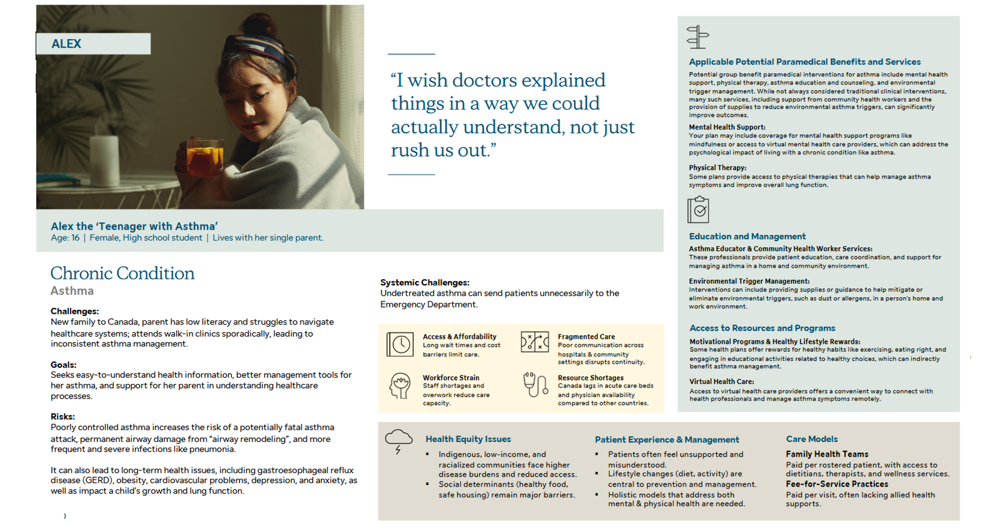
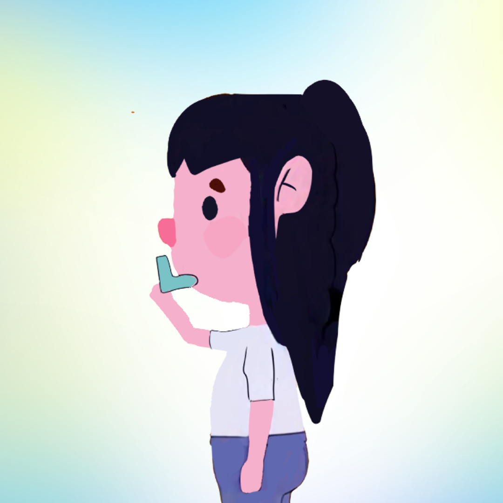
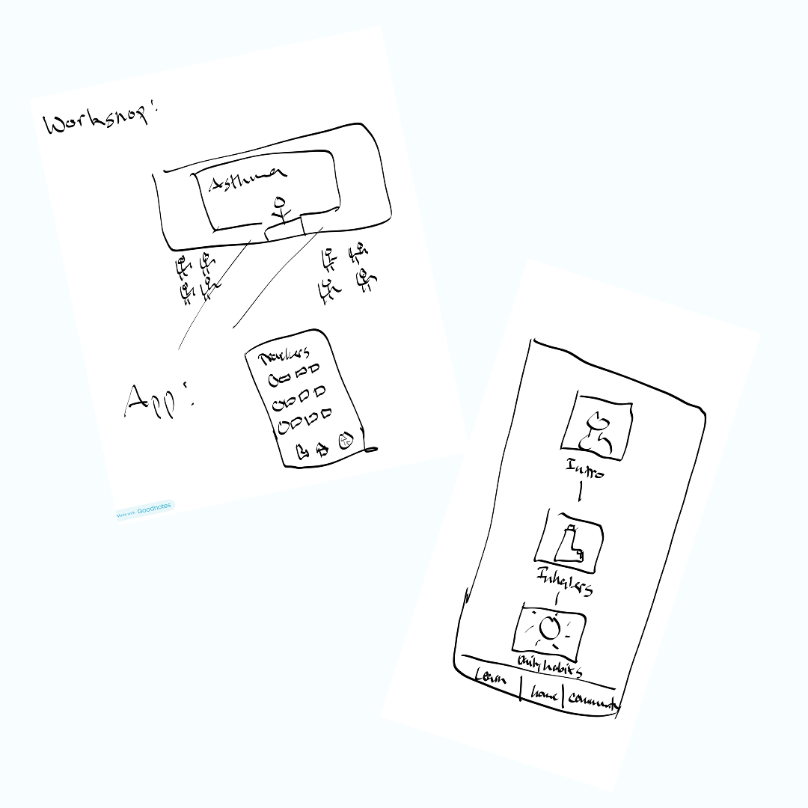
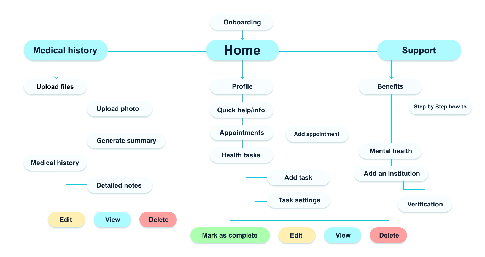
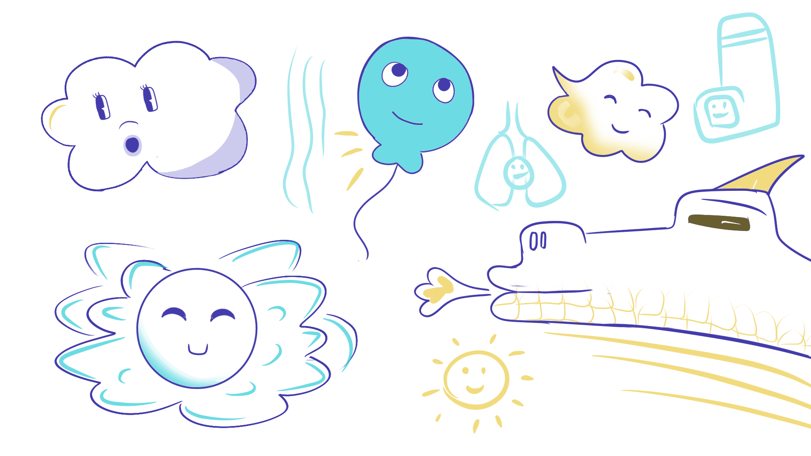

Aira
Introduction
Every term in my program, GBDA, Sun Life sets up shop at Waterloo's Stratford campus and runs a design jam — student teams get a real-world healthcare challenge and a few weeks to solve it. My team's challenge was chronic illness management, and since I live with a chronic illness myself, it wasn't a hard pick. Aira is what we built: an app that helps patients with asthma make sense of a healthcare system that usually leaves them more confused than when they walked in.
Problem
Patients who are newly diagnosed with a chronic illness are handed a lot at once: a fragmented healthcare system, insurance benefits that read like legal fine print, and a set of lifestyle changes they're expected to just figure out. Before Aira could be useful, it had to help people actually understand their benefits, find their way through care pathways, and feel like someone had their back while they adjusted to living with the condition long-term.
Who we're building for
Meet Alex — a 16-year-old student living with asthma that's poorly managed because of inconsistent care, limited health literacy at home, and a healthcare system that doesn't make things easy. Alex's family are newcomers to Canada, and both Alex and her parent struggle to make sense of medical information, find the right services, and catch early warning signs before they become emergencies. Those gaps aren't just inconvenient — they're what send preventable cases to the ER.

What are the pain points?
Between Alex and the real participants we interviewed, three challenges kept coming up.
ClarityMedical information is scattered across different documents, making it hard for Alex to see her own history in one clear picture — which chips away at her confidence in managing her asthma over time.

UnderstandingAlex struggles to read her own asthma reactions and decide what to actually do about them, which leads to delayed care or trips to the ER that didn't need to happen.
SupportNewcomer families run into real barriers to health literacy and care access — dense medical language and an unfamiliar system make it hard for families like Alex's to confidently use the resources already available to them.
Ideation
We kicked things off with a Crazy Eights sprint — eight fast, rough sketches each, all aimed at Alex's challenges. Once the timer stopped, we walked each other through our ideas, explaining which pain point each concept was actually solving. That process surfaced a lot of overlap between our individual sketches, which made it easy to align on shared priorities and confirm we were headed in the same direction.

Information architecture
Once we had our feature ideas, we made sure every single one mapped back to a specific challenge Alex was facing — some features tackled more than one at once, which was a welcome bit of efficiency. For each proposed feature, we could point to exactly which problem it solved before it earned a place in the app. That discipline is what let us organize everything into three clear tabs in our site map.

Every feature on this map was matched to a challenge before it made the cut — no orphaned ideas.
The solution
Clarity
One thing Alex and our real interviewees had in common: appointments were scattered and disconnected, so every visit felt like starting from zero. Aira lets users upload their medical history to one place they can actually view. On top of that, an AI summarization feature turns a doctor's notes into something digestible, so health literacy stops being the bottleneck. Keeping everything on file means Alex never has to reconstruct her own history from memory again.
Organization tools
Confidence starts with knowing what needs to happen next. On the Home page, Alex can view and add upcoming appointments and daily habits in one place, so managing her asthma stops feeling like a scavenger hunt.
Understanding
Right from the Home page, Aira has a quick-help companion on standby for whatever symptoms Alex is dealing with in the moment. Built on our research, it walks through a short questionnaire and returns suggestions and information based on the answers.
Support
Sun Life's own research pointed out that a lot of patients simply don't know what care resources are available to them — which sends unnecessary traffic to doctors and strains a system that's already stretched thin. To close that gap, we built simple, accessible guides that help people understand and actually use the care plans they already have.
Better integration
Aira also lets users link their affiliated institution directly to their account, so benefits and coverage information flows in automatically instead of being something families have to go dig up themselves.
The next steps
As the design jam wound down, my team started talking about what we'd tackle next if Aira were actually built out for real.
Usability testing
Test Aira with people like Alex and her parent to check whether the medical summaries actually land, how much the organization tools help day-to-day, and whether the AI companion holds up.
Expand on support
Keep researching the chronic-health benefits that different institutions actually offer, so the guides stay accurate and useful.
Personalization
Let Aira recognize patterns in a user's symptoms over time, so it can adapt as their condition changes instead of treating every check-in the same.
What I learned
Every feature serves a purpose
Partway through ideation, we noticed a few features that didn't actually tie back to the app's core goal. From then on, we wrote down exactly how each feature served that goal before it stayed on the list.
Organization is clarity
How we organized each feature mattered as much as the feature itself. If Alex was going to manage her asthma better, her tools needed to be organized and easy to reach — not just present.
We also had to pick a mascot. I campaigned hard for a dragon. We ended up with a balloon.
